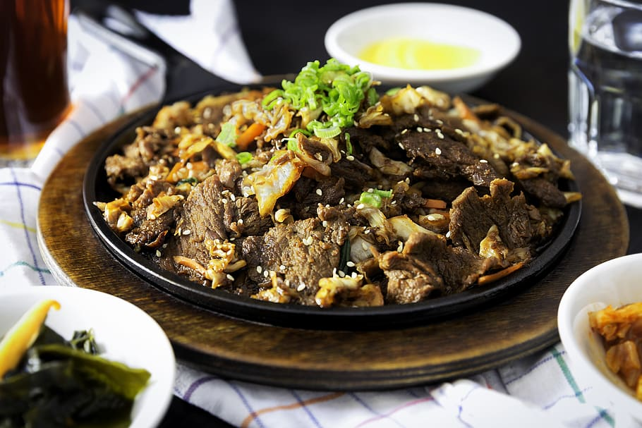

The third and final recipe, and a hearty comfort-- is the Korean Beef Bowl recipe.
| Prep Time: | Cook Time: | Total Time: | Servings: | Yield: | 10 mins | 15 mins | 25 mins | 4 | 4 bowls |
|---|
This Korean beef bowl is seasoned with green onions, garlic, ginger, soy sauce, and sesame. Beef is an excellent source of iron. The iron in beef helps your body produce hemoglobin, a protein that helps your blood carry oxygen from your lungs to the rest of your body. Raised free-range in the South Korean countryside, Hanwoo cattle are known for their high marbling, beefy flavor and slightly sweet taste – a result of an organic mixed grain and grass diet. In South Korea, locally bred Hanwoo is the meat of choice – and it's priced accordingly.
The ingredients can easily be adjusted to suit your taste. The best side dishes to serve with Korean beef are fried rice, cilantro lime rice, quinoa salad, macaroni salad, Brussels sprouts, charro beans, broccoli, stuffed peppers, zucchini noodles, spaghetti squash, spicy cucumber salad, kimchi fried rice, Korean green salad, bao buns, and radish salad.
| Calories | Fat | Carbs | Protein | 574 | 19g | 70g | 29g |
|---|
Return to Main Page.